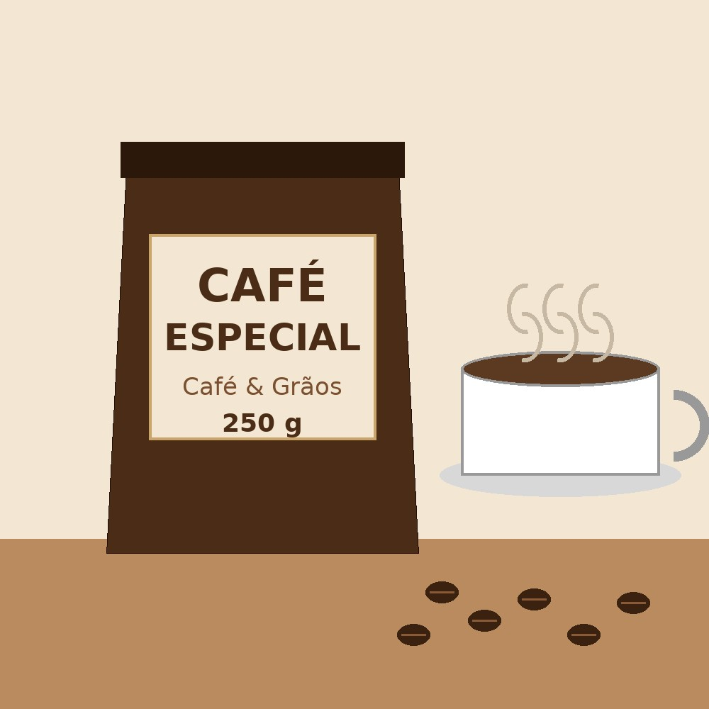

Cafés e kits
| Produto | Tamanho | Preço |
|---|---|---|
| Café Tradicional | 500 g | R$ 18,90 |
| Kit Presente | Café especial 250 g + caneca: R$ 39,90 | |
Confira os cafés e kits disponíveis.
| Produto | Tamanho | Preço |
|---|---|---|
| Café Tradicional | 500 g | R$ 18,90 |
| Kit Presente | Café especial 250 g + caneca: R$ 39,90 | |
Grãos selecionados, com notas de chocolate e caramelo.

Sim. Ao fazer o pedido, escolha grão inteiro ou moído.
Os pacotes fechados duram cerca de 6 meses. Depois de abertos, consuma em até 30 dias.